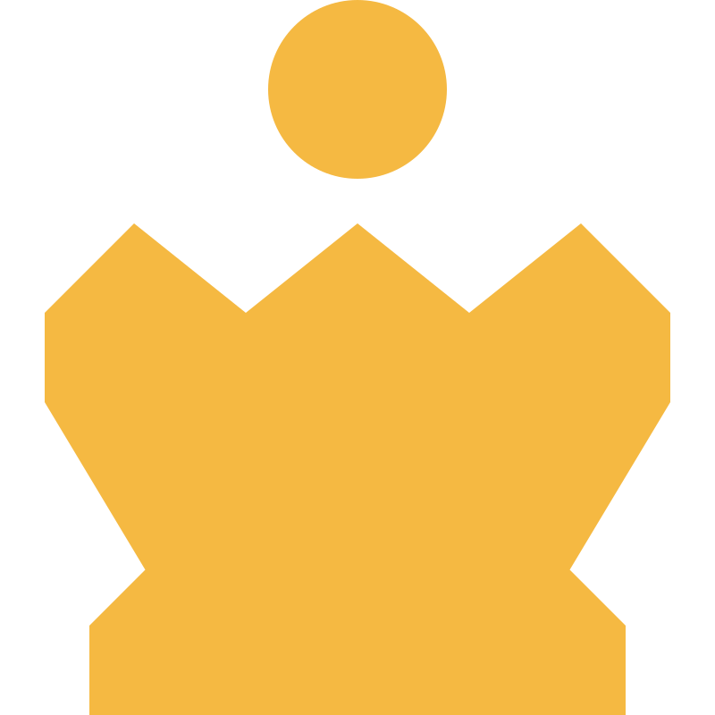
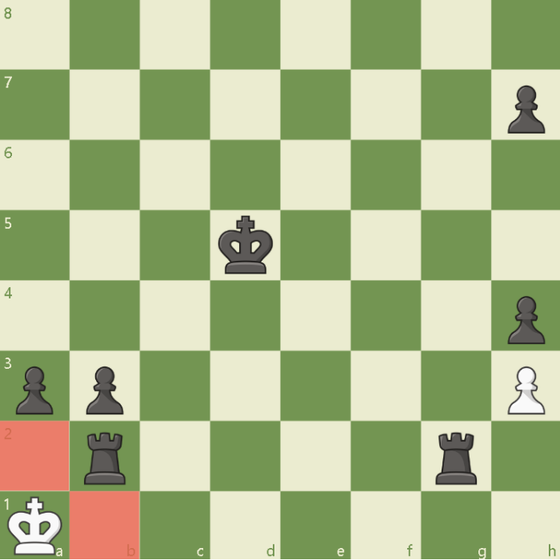
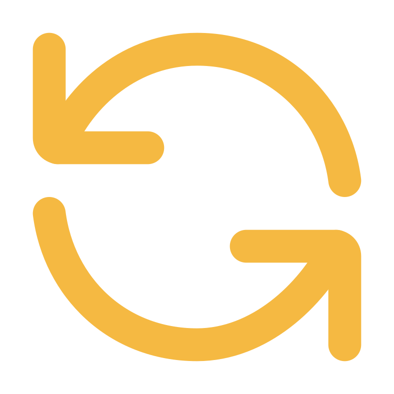
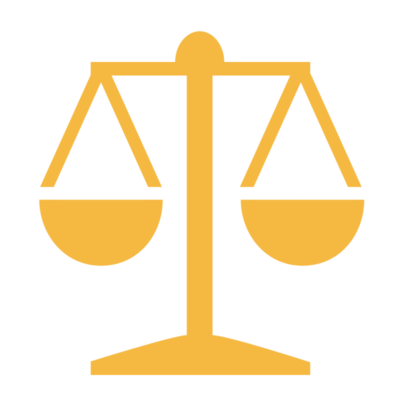
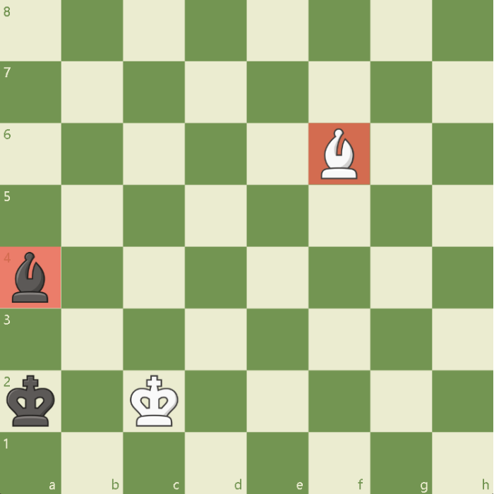
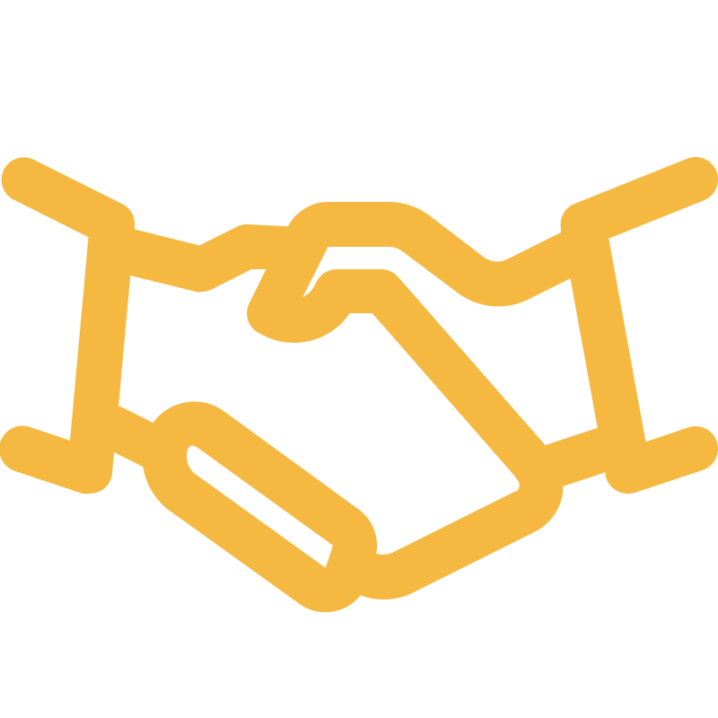

06/06
Draw
A draw happens when neither player can win the game. Instead of a winner, both player agree to end the game in a draw. There are different ways a game can end in a draw, and each one follows specific rule.


How to Play
What is a Draw?
A draw is when the game ends without a winner. It can happen in several ways, including stalemate, threefold repetition, the 50-move-rule, insufficient material, and by mutual agreement. A draw is a fair result when neither player can win.
Common Ways a game ends in a Draw

Stalemate
The player to move has no legal moves, but is not in check.

Threefold RepetitionThe same position occurs three times with the same player to move.

No pawn move or capture has been made in the last 50 move.

Insufficient Material
Neither player has enough material to checkmate(e,g., king vs king. or King and bishop vs king)

Mutual AgreementBoth players agree to end the game in a draw.

Key Takeaways
A draw means neither player wins.
There are different ways a game can end in a draw.
Stalemate is a common reason for a draw.
Understanding draw rules helps you make better decisions.
A draw is still a valid and respectable result.
" A draw isn't the end of the game — it's part of the journey."